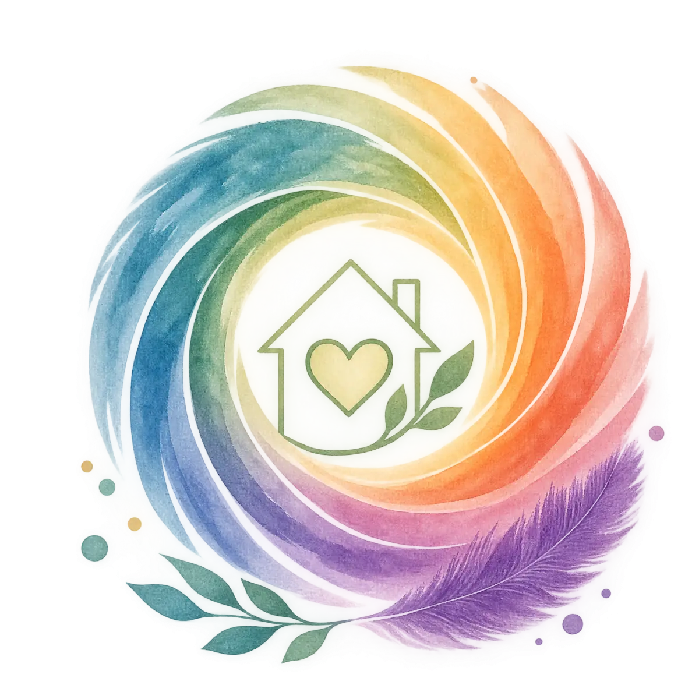

à domicile
« Stimuler aujourd’hui pour préserver demain »

Léa GuerinetAccompagnatrice à l’autonomie
Un accompagnement à domicile pour préserver l’autonomie, le lien social et les capacités cognitives, construit avec la personne et, si elle le souhaite, avec ses proches.
Ma mission
J’accompagne les personnes qui souhaitent préserver leur autonomie, maintenir une vie sociale active et continuer à réaliser les activités qui donnent du sens à leur quotidien.
Mon approche repose sur la relation humaine, la valorisation des capacités préservées et la participation active de la personne à sa propre vie. Chaque accompagnement est personnalisé selon ses besoins, ses habitudes de vie, ses centres d’intérêt et ses objectifs.
Mes prestations
Loisirs et stimulation cognitive
Des activités adaptées qui sollicitent les capacités cognitives, dans un cadre agréable et non thérapeutique :
- Jeux de mémoire
- Exercices d’attention et de concentration
- Activités culturelles
- Lecture et discussion
- Jeux de société
- Activités créatives
- Stimulation des fonctions du quotidien
- Activités choisies selon les centres d’intérêt de la personne
Objectifs
Maintenir les capacités existantes, favoriser le plaisir d’agir, stimuler la curiosité, renforcer l’estime de soi et lutter contre le repli sur soi.
Accompagnement dans la vie quotidienne
Un soutien dans les activités du quotidien, pour favoriser le maintien de l’autonomie :
- Organisation des journées
- Soutien dans les routines quotidiennes
- Accompagnement lors des courses
- Aide à la préparation des repas
- Accompagnement aux rendez-vous
- Soutien dans les déplacements
- Aide à la gestion des démarches simples
Objectifs
Préserver les habitudes de vie, maintenir les capacités fonctionnelles, encourager l’autonomie plutôt que faire à la place.
Accompagnement à la vie sociale
Un soutien à la participation sociale et contre l’isolement :
- Promenades
- Sorties culturelles
- Participation à des activités associatives
- Accompagnement à des événements locaux
- Maintien des liens avec l’entourage
Objectifs
Préserver le lien social, favoriser le sentiment d’appartenance, maintenir une bonne qualité de vie.
Organisation du quotidien
Un soutien dans l’organisation de la vie courante :
- Planification des rendez-vous
- Organisation des documents administratifs
- Aide à la gestion d’un agenda
- Soutien à l’organisation générale du domicile
Objectifs
Simplifier le quotidien, réduire la charge mentale, sécuriser l’organisation de la personne accompagnée.
Soutien aux aidants
Des temps d’écoute, d’échange et de relais auprès des proches aidants :
- Écoute des difficultés rencontrées
- Partage d’observations du quotidien
- Identification des besoins de répit
- Soutien à l’organisation de l’accompagnement
Objectifs
Prévenir l’épuisement des aidants, favoriser une meilleure qualité d’accompagnement, maintenir une coopération positive autour de la personne.
Gestion domestique légère
Une aide pour les tâches simples du quotidien :
- Accompagnement aux courses
- Aide à la préparation des repas
- Aide administrative simple
- Organisation pratique du domicile
Ce qui fait la différence
La même personne, à chaque fois
C’est toujours moi qui interviens : des repères stables et une relation de confiance qui se construit.
Des séances préparées sur mesure
Chaque intervention est pensée selon l’histoire, les centres d’intérêt et les capacités du moment de chacun.
Une vision globale
J’accompagne la personne et, si elle le souhaite, son entourage, pour un suivi cohérent et rassurant.
Comment ça se passe
-
Vous me contactez
Par téléphone, sur WhatsApp ou avec le formulaire de cette page. Vous m’expliquez la situation en quelques mots.
-
Je viens chez vous
Tout commence par une visite à domicile, pour comprendre la situation, les besoins et les habitudes de vie. J’interviens à Moulins et alentours.
-
Nous construisons l’accompagnement ensemble
Je propose un accompagnement sur mesure, pensé avec la personne et, si elle le souhaite, avec ses proches. J’aide aussi aux démarches liées au crédit d’impôt.
Éligible au crédit d’impôt
Mes accompagnements ouvrent droit au crédit d’impôt pour l’emploi à domicile : la moitié des sommes versées vous revient, dans la limite d’un plafond annuel.
- Selon votre situation, vous m’employez directement en Cesu ou je vous facture la prestation. Nous choisissons ensemble la formule la plus simple pour vous.
- Le plafond est de 12 000 € de dépenses par an en général, davantage dans certains cas (première année d’emploi direct, personne de plus de 65 ans au foyer…).
- En Cesu, l’avance immédiate du Cesu+ vous permet de ne payer que la moitié chaque mois, au lieu d’attendre l’année suivante.
- C’est un crédit et non une réduction : il est versé même si vous ne payez pas d’impôt.
Je vous aide dans vos démarches
Le maintien à domicile s’accompagne de papiers. Je vous aide à les comprendre et à les remplir, avec vous :
- l’inscription au Cesu et l’avance immédiate ;
- la déclaration des heures chaque mois ;
- l’organisation des documents administratifs ;
- la planification des rendez-vous et la tenue d’un agenda.
Faite chez vous, cette aide administrative est elle aussi éligible au crédit d’impôt.
Conditions et plafonds détaillés sur service-public.gouv.fr.
Mon engagement
Apporter aux personnes fragilisées et à leurs proches un accompagnement humain, personnalisé et coordonné, pour préserver l’autonomie, soutenir les aidants et favoriser le maintien à domicile dans les meilleures conditions.
Me contacter
Vous pouvez m’appeler, m’écrire sur WhatsApp ou m’envoyer un message avec ce formulaire. J’interviens à Moulins et alentours.
- 06 04 19 58 15Par téléphone
- Écrire sur WhatsAppAu même numéro
- lea@ellesadomicile.frPar email